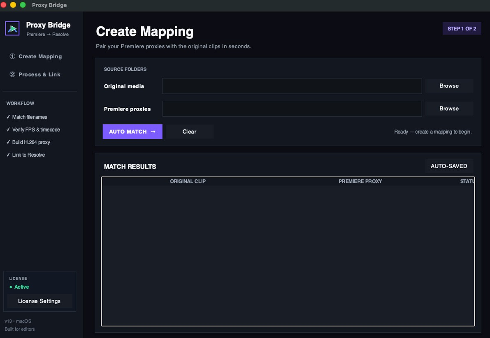
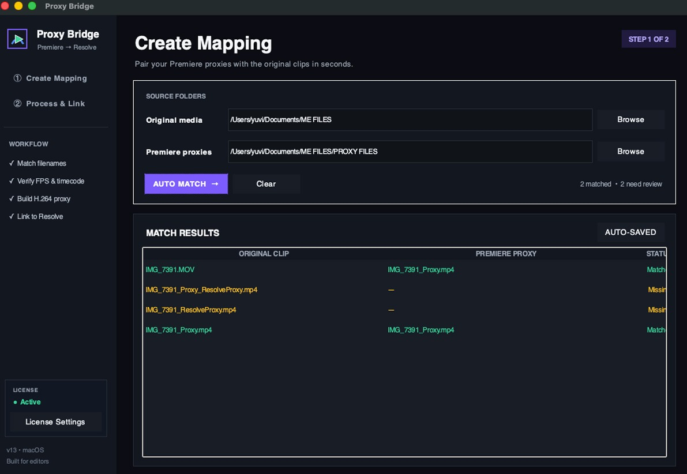
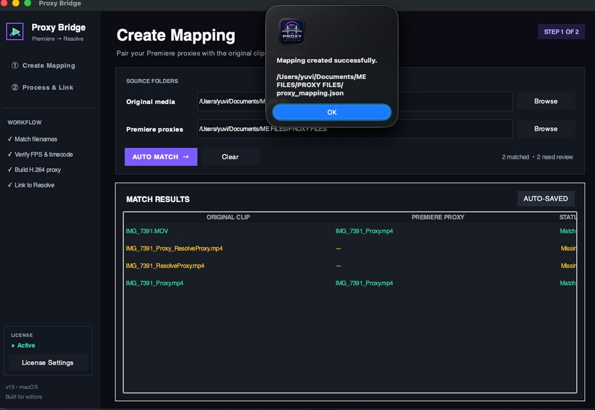
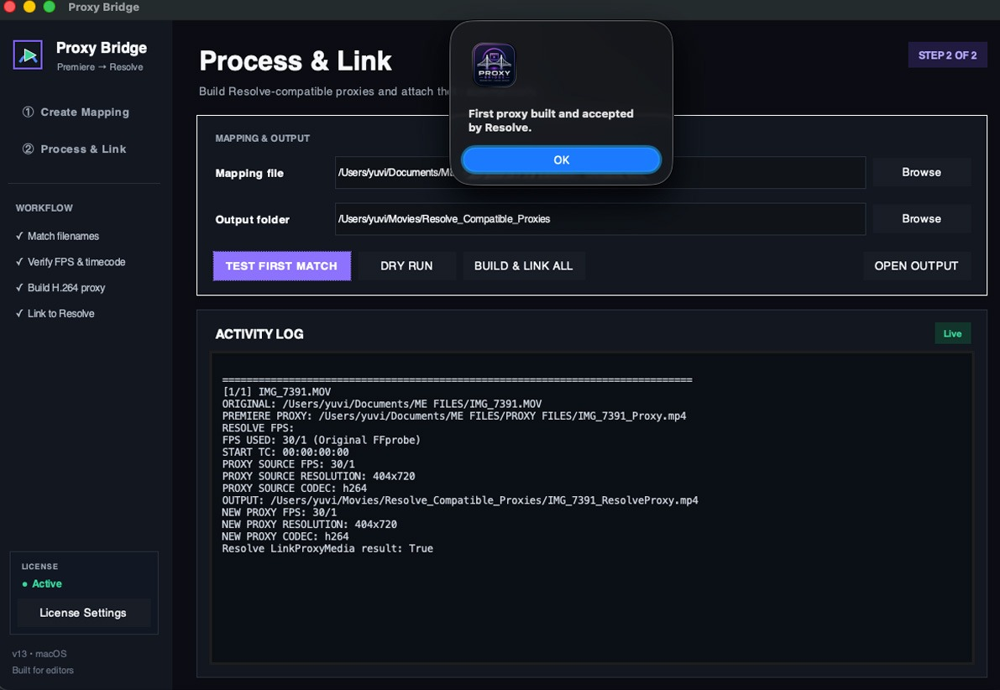
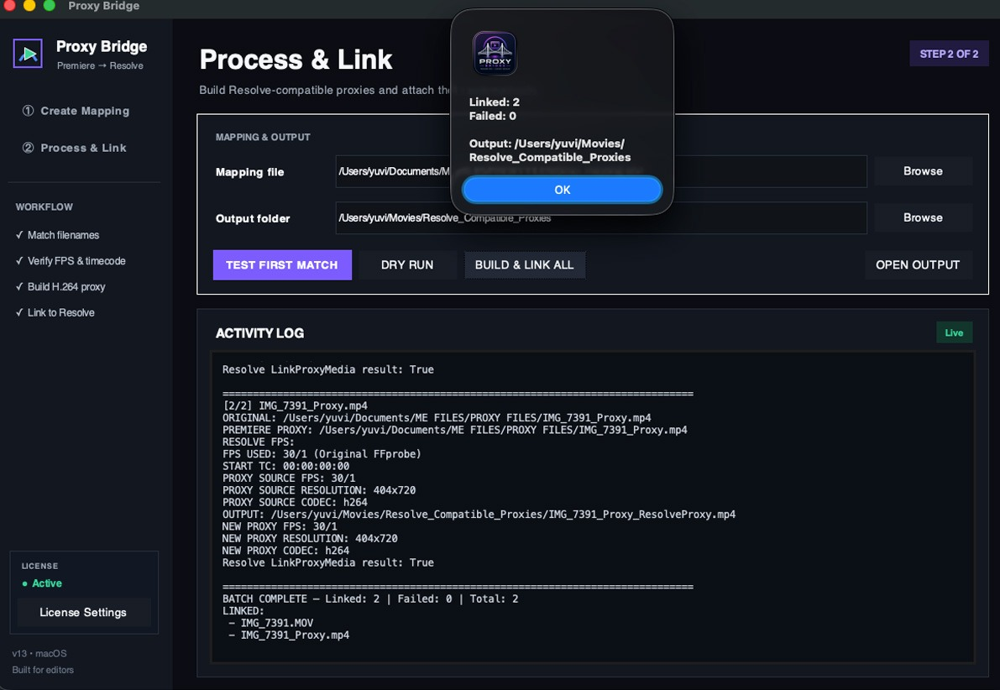

Stop fighting with your proxies.
Proxy Bridge simplifies the messy process of matching Premiere Pro proxies with original media and preparing them for DaVinci Resolve.
Your proxy workflow shouldn't be this complicated.
Moving a project between editing and color shouldn't mean spending hours searching, matching and preparing proxy files.
Manual matching
Finding the correct proxy for every original clip can become painfully repetitive on large projects.
Media metadata
Frame rate and timecode differences can create extra problems when moving proxy workflows into Resolve.
Relinking headaches
Preparing and connecting compatible proxy files shouldn't require a long chain of manual steps.
One workflow from Premiere to Resolve.
Proxy Bridge brings the repetitive parts of your proxy workflow into one focused process.
- Match original media with proxy files
- Review FPS and starting timecode
- Build Resolve-compatible proxies
- Prepare media for linking in Resolve
Built around your existing workflow.
Proxy Bridge doesn't try to replace your editing or color software. It helps connect the proxy workflow between them.
Premiere Pro → Proxy Bridge → DaVinci Resolve
Five steps. One clean process.
From your proxy folders to a Resolve-ready workflow.
Map
Choose your original media and Premiere proxy folders.
Match
Automatically match originals with their proxy files.
Verify
Review frame rate and timecode information.
Build
Generate Resolve-compatible proxy files.
Link
Prepare the generated proxies for Resolve.
From Premiere Pro to Resolve.
A closer look at the actual Proxy Bridge workflow.
Create Mapping
Select your original media and Premiere Pro proxy folders.

Auto Match
Automatically match original clips with their corresponding proxies.

Build Resolve Proxies
Generate Resolve-compatible proxy files automatically.

Process & Link
Process the proxies and prepare them for DaVinci Resolve.

Linked Successfully
Your media is linked and ready to continue working with in Resolve.

Less manual work. More editing.
Focused tools for the parts of the proxy workflow that slow editors down.
Automatic Matching
Match original clips with Premiere Pro proxy files by filename and review the mapping before processing.
FPS & Timecode
Review frame rate and starting timecode information before creating the new proxy workflow.
Resolve-Compatible Proxies
Create H.264 proxy files designed for your DaVinci Resolve workflow.
Organized Workflow
Keep mapping, verification, processing and linking together instead of jumping between multiple manual steps.
Built for Editors
A focused utility designed around real-world Premiere Pro and DaVinci Resolve workflows.
Mac & Windows
Use Proxy Bridge across your editing setup without changing the way you work.
Editors who move between worlds.
Whether you're finishing one project or handling hundreds of clips, Proxy Bridge keeps the proxy workflow focused.
Start free. Upgrade when you need more.
Try Proxy Bridge with 100 free clips, then choose the plan that fits your workflow.
Try Proxy Bridge with your first 100 clips.
- 100 free clips
- Automatic matching
- FPS & timecode verification
- Basic proxy workflow
For editors working on regular projects.
- 1,000 clips / month
- Automatic matching
- FPS & timecode verification
- Resolve-compatible proxies
- Workflow & linking tools
For professional editors handling larger projects.
- 5,000 clips / month
- Everything in Creator
- Larger project workflows
- Priority support
- Future workflow improvements
Unused monthly clips do not roll over. Subscription checkout links will be added when plans are activated.
Want to own Proxy Bridge?
The current launch edition is available as a one-time purchase.
Questions, answered.
What is Proxy Bridge?
Proxy Bridge is a desktop utility designed to simplify proxy workflows between Adobe Premiere Pro and DaVinci Resolve.
How does the proxy workflow work?
You select your original media and proxy folders, match the media, verify FPS and timecode information, build Resolve-compatible proxies and prepare them for linking.
How are clips counted?
A successfully generated proxy counts as one clip. Failed generations should not consume a clip allowance.
Do unused clips roll over?
No. Monthly plans receive a fresh clip allowance at the beginning of each billing cycle. Unused clips do not carry forward.
Does Proxy Bridge modify my original media?
Proxy Bridge is designed around your proxy workflow. Your original media remains the source media for the project.
Does it work with DaVinci Resolve?
Yes. Proxy Bridge is specifically designed to help prepare and link proxy workflows for DaVinci Resolve.
Is Proxy Bridge available for Mac and Windows?
Yes. The product is intended for both Mac and Windows users.
Stop wasting time on proxy management.
Try Proxy Bridge with 100 free clips and see how much simpler your Premiere Pro → DaVinci Resolve workflow can be.
Built for editors.
Proxy Bridge is an independent software product created and developed by Yuvraj Singh . Built for editors working between Premiere Pro and DaVinci Resolve, Proxy Bridge is designed to simplify proxy matching, processing and linking.